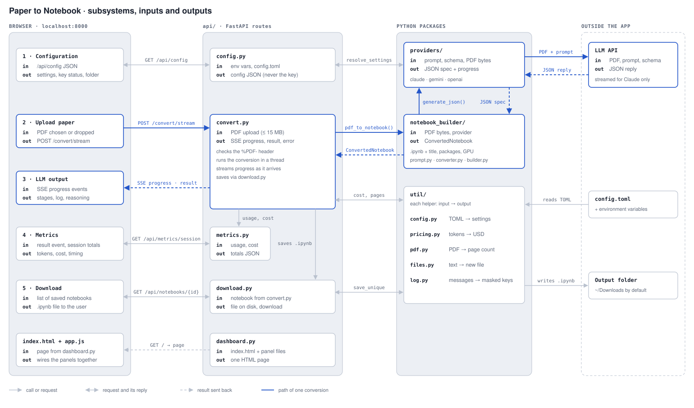

paper-to-notebook · docs
How a research paper PDF becomes a Google Colab notebook: start with the overview, then read how the backend and the dashboard are built.
The five parts of the app on one page: dashboard, API routes, arXiv source, conversion and LLM providers, with the shared helpers.

Which subsystems exist and who calls whom, one conversion in order, and a worked example from PDF to notebook.
How the dashboard is built without a framework: panels, how the page is assembled, the event flow during a conversion, the Run check drawer, and how to add a panel.
Elsewhere
./check.sh